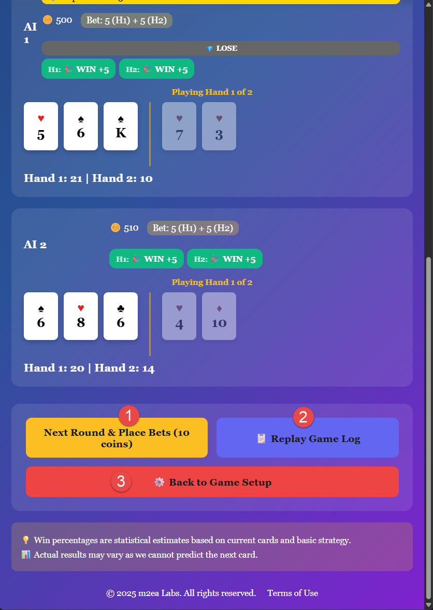
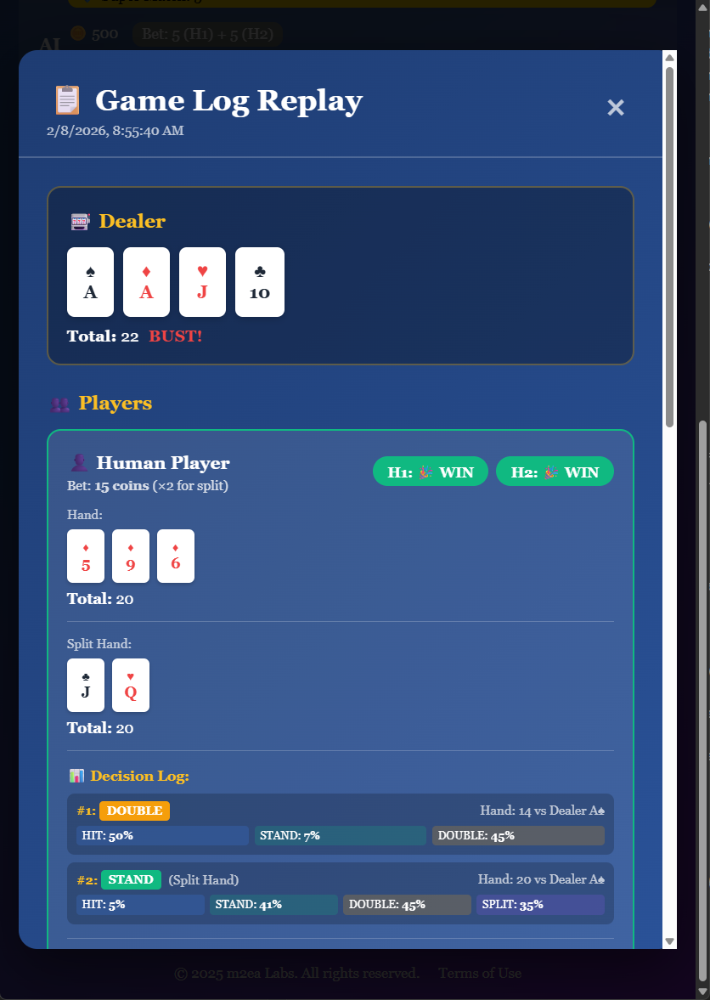

1. Parier 10 jetons et rejouer
Vous pouvez rapidement commencer une nouvelle partie avec les mêmes paramètres en pariant 10 jetons (5 jetons par main) et en jouant un autre tour. C'est le moyen le plus rapide de continuer à jouer au Blackjack Switch.
2. Consulter le journal du jeu
Lorsque vous cliquez sur « Rejouer le journal du jeu », vous pouvez consulter toutes les étapes des journaux de jeu de tous les joueurs. Cette fonctionnalité complète vous permet de :
3. Retour à la configuration du jeu
Vous pouvez revenir à l'écran de configuration du jeu si vous souhaitez modifier le nombre de jeux, ajuster le nombre de joueurs IA ou retourner au menu principal pour sélectionner un jeu différent.

Le journal de jeu pour le Blackjack Switch fournit encore plus d'informations détaillées que le blackjack régulier car il inclut la phase d'échange. Vous pouvez voir :
Pourquoi consulter les journaux du Blackjack Switch ?
Les journaux de jeu sont particulièrement précieux dans le Blackjack Switch car la décision d'échange ajoute une couche stratégique unique. En consultant les journaux, vous pouvez apprendre quels modèles d'échange conduisent à de meilleurs résultats, comprendre quand garder les cartes ou les échanger, voir comment les joueurs IA abordent la décision d'échange et améliorer votre stratégie globale pour cette variante unique.
Apprentissage à partir des modèles :
Au fil du temps, consulter plusieurs journaux de jeu vous aide à identifier les modèles d'échange réussis, reconnaître les considérations de carte visible du croupier, comprendre les compromis risque-récompense et développer une stratégie cohérente pour les décisions d'échange de cartes.
